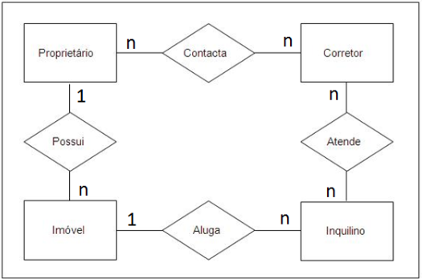
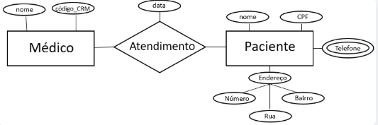

Fundamentos de Banco de Dados
Conheça os conceitos essenciais sobre bancos de dados, SGBDs, modelagem e aplicações práticas.
1. O que é um SGBD? Tipos e Aplicações
Um Sistema de Gerenciamento de Banco de Dados (SGBD) é um software que permite criar, gerenciar e manipular bancos de dados. Ele garante integridade, segurança e eficiência no acesso aos dados.
💻 Tipos de SGBD
Relacional, Não Relacional (NoSQL), Hierárquico, Rede.
⚙️ Aplicações
Empresas, sistemas bancários, sites, aplicativos, redes sociais, ERPs e CRMs.
2. Principais Bancos de Dados
Os bancos de dados mais usados incluem:
Relacionais
MySQL, PostgreSQL, Oracle, SQL Server.
Não Relacionais
MongoDB, Firebase, Cassandra, Redis.
3. Dicionário de Dados e Tipos de Dados
O dicionário de dados é um repositório que descreve os elementos do banco de dados, incluindo tabelas, campos, tipos de dados e restrições.
📌 Tipos de Dados
Inteiro, Real, String (texto), Booleano, Data/Hora, BLOB (imagens e arquivos).
📝 Importância
Garante padronização, integridade e entendimento do banco por desenvolvedores e administradores.
4. Modelagem de Banco de Dados, DER e MER
A modelagem define como os dados serão organizados. O Diagrama Entidade-Relacionamento (DER) e o Modelo Entidade-Relacionamento (MER) ajudam a representar visualmente essas relações.
📊 DER
Representa entidades, atributos e relacionamentos de forma simplificada.
📈 MER
Detalha entidades, relacionamentos, cardinalidade e regras de integridade.
5. Exemplo de Diagrama DER
Exemplo de DER ilustrando o relacionamento entre entidades de um sistema de cadastro de alunos e cursos:
6. Exemplo de Diagrama MER
Exemplo de MER detalhando entidades, atributos e relacionamentos com cardinalidade:
7. Formulário de Cadastro de Dados
Exemplo de formulário simulando a gravação de dados em um banco de dados: